În stînga este slide-ul din curs, în dreapta aceeași figură, calculată în browser din aceleași date. Butonul ▶ modifică parametrul pas cu pas.
Stabilitatea la adunare · Teorema limită centrală generalizată · Parametrii și funcția caracteristică · Cozi și momente · Simulare · Estimare · Estimarea pe randamente reale · Critica: varianță finită sau infinită?
Stabilitatea la adunare
Stabilitatea într-o simulare
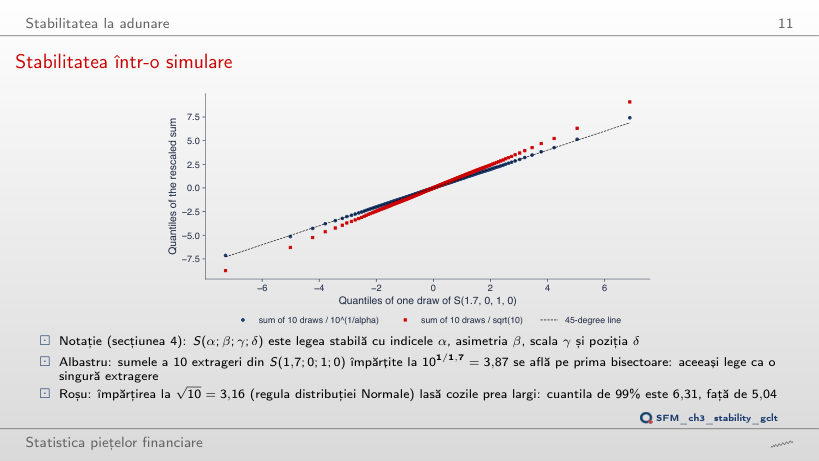
Răspuns
Circa 7,27. Împărțită la 501/1,7 = 9,98, aceeași sumă are cuantila de 99% egală cu 5,15, adică legea unei singure extrageri. Regula √n subestimează scala sumei cu factorul n1/α − 1/2, care crește cu n: 100,088 = 1,23 și 500,088 = 1,41. Cu varianță infinită, mai mulți termeni nu aduc suma mai aproape de regula distribuției Normale.
Consecințe: orizonturi și diversificare
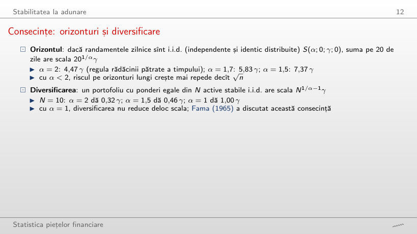
Factorul de scală al sumei pe n zile și al portofoliului cu N active (γ = 1)
Exemplu lucrat: scala riscului pe n zile, cu α̂ și γ̂ estimate
Răspuns
De 2,51 ori: 2501/1,5 = 39,69, față de √250 = 15,81. Raportul este n1/α − 1/2 = 2501/6, deci crește cu orizontul. Cu α̂ = 1,540 estimat pentru S&P 500, raportul este 1,56 la 20 de zile și 2,28 la 250 de zile. Pentru un portofoliu cu ponderi egale din N = 10 active, scala scade la 0,46γ pentru α = 1,5, față de 0,32γ pentru distribuția Normală.
Teorema limită centrală generalizată
GCLT într-o simulare
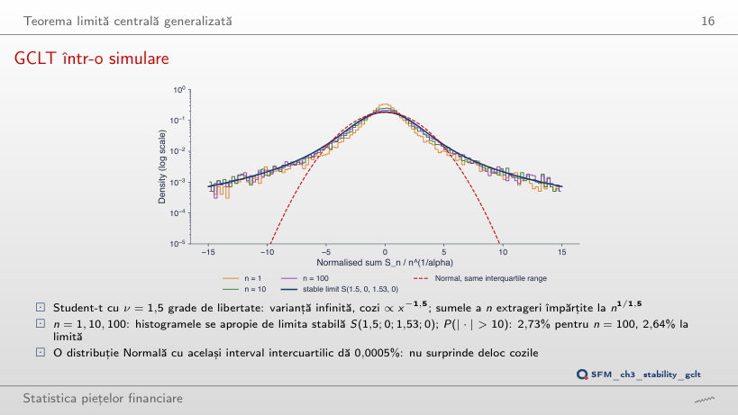
Răspuns
17,2%, aproape de 19,2% pentru sumele cu n = 100 și de 21,7% pentru limita stabilă. Același interval intercuartilic face corpurile celor două legi asemănătoare; diferența apare departe în cozi: la pragul 10, 0,0005% față de 2,73% în simulare. Butonul ▶ arată cum raportul crește odată cu pragul.
Parametrii și funcția caracteristică
Efectul lui α
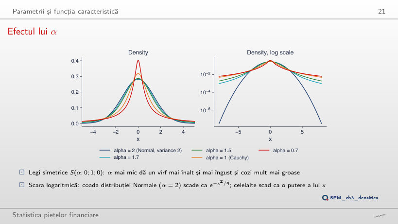
Răspuns
Densitatea în x = 5. f(0) crește de la 0,2821 la 0,2874, cu 1,9%, iar f(5) crește de la 0,000545 la 0,00711, de 13 ori. Pe scara liniară curbele par apropiate; pe scara logaritmică se vede că α schimbă mai ales cozile. P(|X| > 5) este 0,041% pentru α = 2 și 4,14% pentru α = 1,5.
Efectul lui β și γ
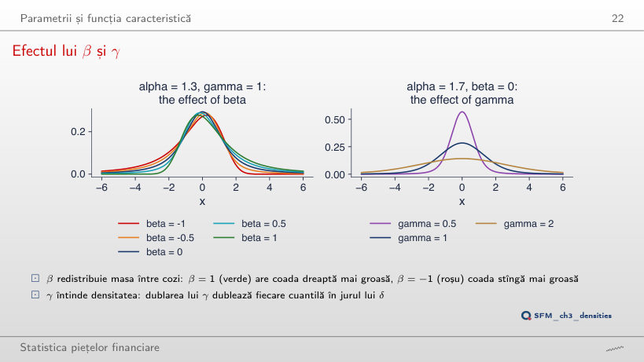
Răspuns
De circa 3 ori: raportul este 3,29 la pragul 10 și tinde la (1 + β)/(1 − β) = 1,5/0,5 = 3, din formula cozilor P(X > x) ∼ cα(1 + β)x−α și P(X < −x) ∼ cα(1 − β)x−α. La pragul 3 probabilitățile sînt 10,8% și 3,37%. Cu β = 1, coada stîngă scade mult mai repede decît x−α.
S1 și S0 în apropiere de α = 1
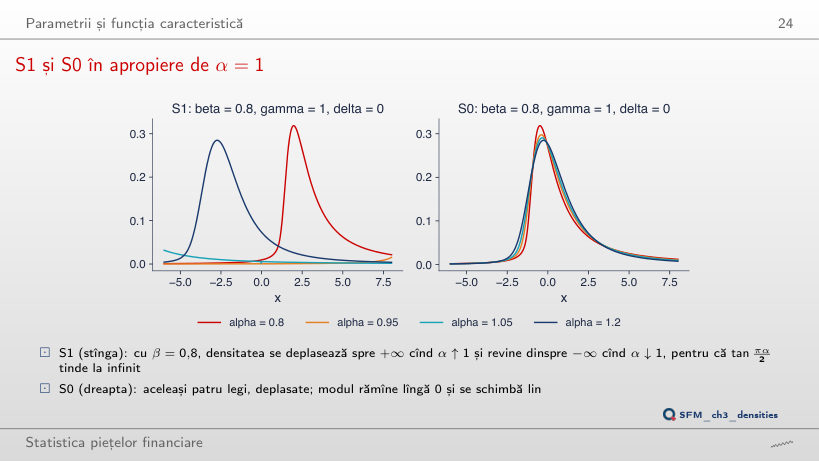
Răspuns
La circa 50,5, departe în afara graficului. Deplasarea dintre cele două parametrizări este β tan(πα/2) = 0,8 × 63,66 = 50,93, iar modul în S0 este −0,38. La α = 1,01 tangenta își schimbă semnul și modul în S1 ajunge la circa −51. În S0 modul rămîne între −0,48 și −0,26 pe tot intervalul.
Distribuțiile Normală, Cauchy și Lévy
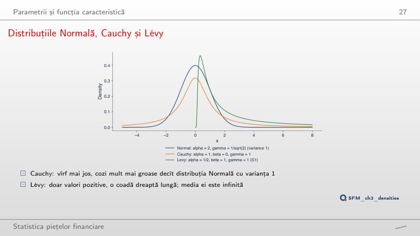
Răspuns
Legea Lévy: 17,7%, față de 1,59% pentru Cauchy și circa 3 × 10−87% pentru distribuția Normală. Coada Lévy scade ca x−1/2 (α = 1/2), coada Cauchy ca x−1. Pentru x = 3 probabilitățile sînt 43,6% (Lévy), 10,2% (Cauchy) și 0,13% (distribuția Normală).
Exemplu lucrat: S1 și S0 în t = 1
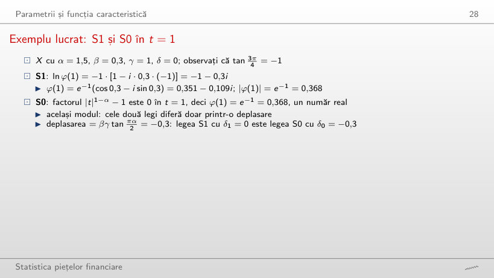
Diferența de locație dintre S0 și S1
Exemplu lucrat: φ(t) în S1 și în S0
Răspuns
Pentru α = 1,1: β tan(πα/2) = 0,3 × (−6,314) = −1,894, față de 0,3 × (−0,158) = −0,048 pentru α = 1,9. Tangenta tinde la infinit cînd α se apropie de 1, de aceea parametrizarea S1 deplasează densitatea foarte mult în jurul lui α = 1, iar S0 nu. Modulul |φ(t)| = e−|t|α este același în ambele parametrizări; diferă doar argumentul, printr-un termen liniar în t.
Cozi și momente
Cozile pe axe log-log
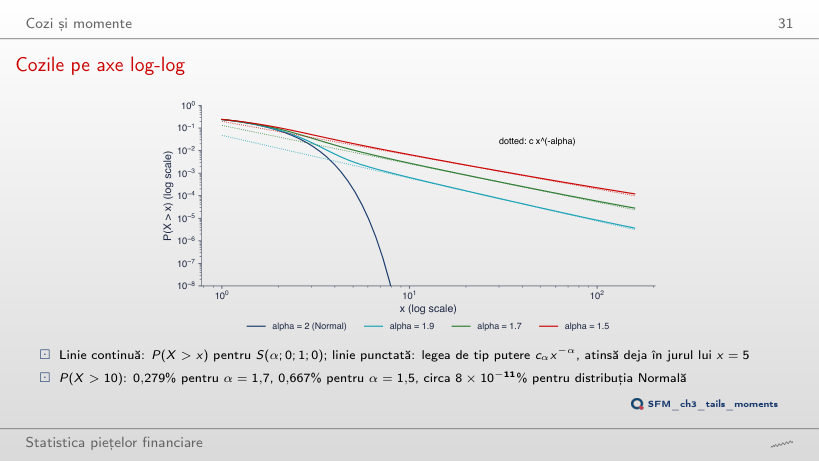
Răspuns
0,0165%: dublarea pragului împarte probabilitatea la circa 21,9 = 3,7 (raportul exact este 0,256, legea de tip putere dă 2−1,9 = 0,268). Cu α aproape de 2 coada rămîne de tip putere, departe de distribuția Normală, pentru care P(X > 10) este de ordinul 10−12.
Varianța de selecție nu se stabilizează
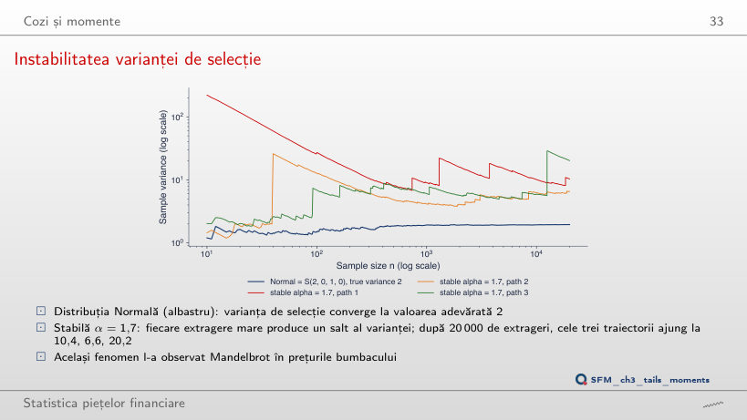
Răspuns
Nu: 3,16, 2,62 și 4,12, față de 1,96 pentru distribuția Normală. Pentru orice α < 2 varianța este infinită și fiecare extragere mare produce un salt. Cu α = 1,95 valorile finale sînt 2,46, 2,22 și 2,83; numai α = 2 dă 2,00, 1,97 și 1,99. Cu α = 1,7 (slide-ul): 10,4, 6,6 și 20,2.
Probabilitățile din cozi: distribuția stabilă și distribuția Normală
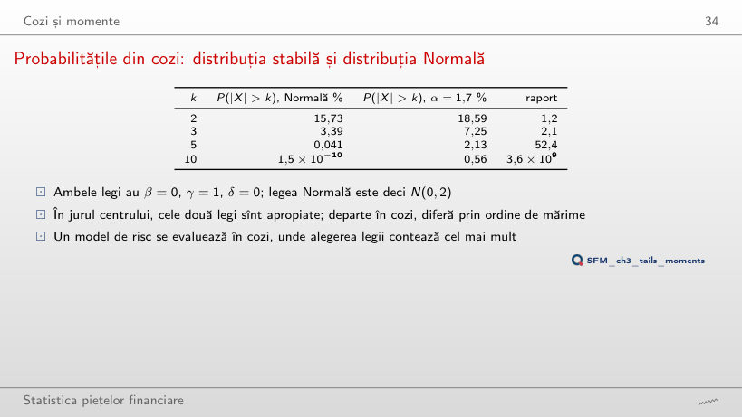
P(|X| > k): distribuția Normală N(0, 2) și legea stabilă S(α; 0; 1; 0)
Răspuns
0,52%, adică 94% din valoarea exactă. La k = 20 aproximarea dă 0,161% față de 0,166% exact (97%), iar la k = 2 doar 8,1% față de 18,6%: formula cozii este asimptotică și devine precisă departe în coadă. Raportul față de distribuția Normală N(0, 2) este 1,2 la k = 2 și 3,6 × 109 la k = 10.
Simulare
Exemplu lucrat: o extragere pas cu pas
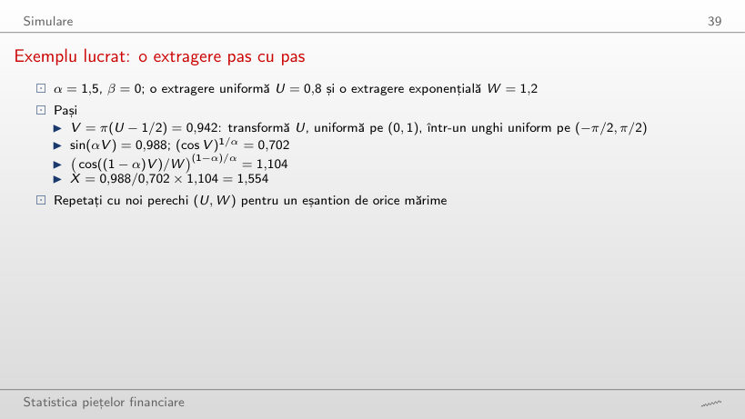
Exemplu lucrat: o extragere CMS din (U, W)
Răspuns
1,843. Pentru β = 0, W intră doar prin factorul (cos((1 − α)V)/W)(1 − α)/α; exponentul (1 − α)/α = −1/3 este negativ, deci X crește proporțional cu W1/3: 1,554 × (2/1,2)1/3 = 1,843. Un W mai mic micșorează extragerea: W = 0,5 dă 1,161. Pentru α = 2 formula devine 2 sin V √W, o extragere din N(0, 2): 1,772 pentru U = 0,8 și W = 1,2.
Extrageri CMS față de densitatea exactă
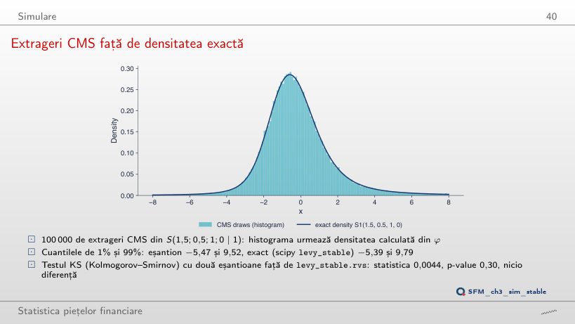
Răspuns
Aproximativ în oglindă: −9,81 și 5,38 (în eșantionul simulat −9,99 și 5,21). În S1 cu δ = 0, legea cu −β este legea cu β reflectată față de 0, deci β schimbă coada mai lungă, nu doar poziția. Histograma urmează densitatea exactă pentru fiecare combinație de α și β.
Estimare
Corespondența McCulloch între ν_α și α
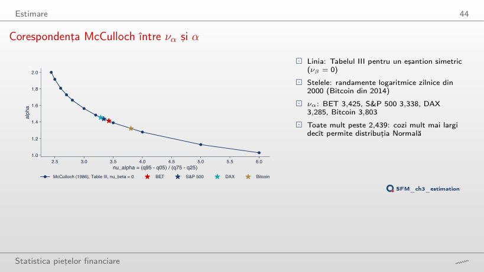
Răspuns
Nu, crește la 1,543: να scade de la 3,338 la 3,044. Estimatorul McCulloch folosește doar cuantilele de 5%, 25%, 50%, 75% și 95%, deci zilele extreme nu intră direct în calcul; contează cît de lată este banda 5–95% față de intervalul intercuartilic. DAX trece de la 1,455 la 1,590, BET de la 1,414 la 1,480, Bitcoin de la 1,322 la 1,400.
Exemplu lucrat: McCulloch pe BET
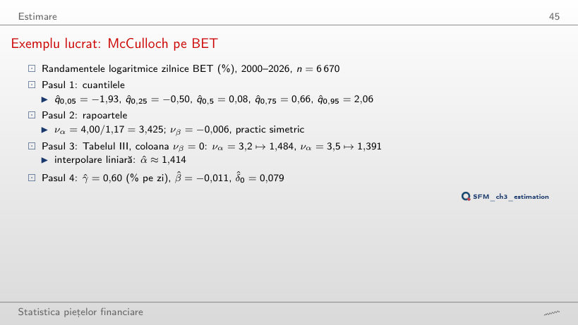
Estimatorul McCulloch pe randamentele logaritmice zilnice (%)
Exemplu lucrat: de la cuantile la α̂, β̂, γ̂ și δ̂0
Răspuns
Circa 1,53: între να = 3,0 ↦ 1,563 și να = 3,2 ↦ 1,484, interpolarea liniară dă 1,531, iar cu |νβ| = 0,036 rezultă α̂ = 1,529. Un να mai mic înseamnă o bandă 5–95% mai îngustă față de intervalul intercuartilic, deci cozi mai subțiri și α̂ mai mare. Distribuția Normală are να = 2,439 și α = 2.
McCulloch și ML într-un studiu Monte Carlo
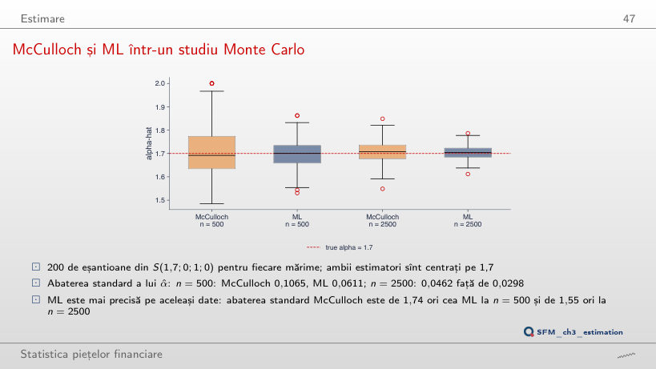
Media și abaterea standard a lui α̂, α = 1,7
Răspuns
Da: de la 0,050 la 0,061. Precizia lui α̂ depinde de mărimea eșantionului n; numărul de eșantioane Monte Carlo determină doar cît de bine este măsurată această precizie. Cu 100 de eșantioane, abaterea standard estimată are încă o eroare relativă de cel puțin 1/√(2 × 100) = 7%. Pentru McCulloch, 0,110 la 100 și 0,107 la 200.
Estimarea pe randamente reale
Legi stabile estimate pe randamentele logaritmice zilnice
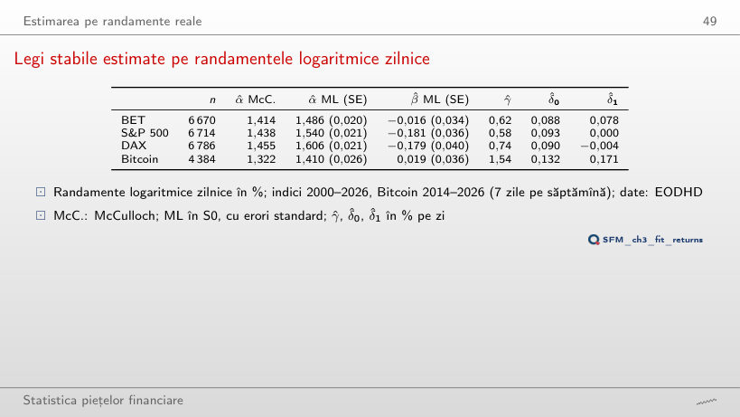
Legi stabile estimate (S0) pe randamentele logaritmice zilnice
Exemplu lucrat: locația din S0 în S1
Răspuns
Pentru toate patru. La 99% (±2,576 erori standard) intervalele sînt BET [1,435; 1,537], S&P 500 [1,486; 1,594], DAX [1,551; 1,661] și Bitcoin [1,343; 1,476], iar α̂ McCulloch este 1,414, 1,438, 1,455 și 1,322. Nici la 99,9% nu se schimbă concluzia (Bitcoin: limita inferioară 1,324). Cele două metode ponderează diferit cozile. Intervalele sînt asimptotice și nu includ incertitudinea estimației McCulloch.
Densități estimate, pe scară logaritmică
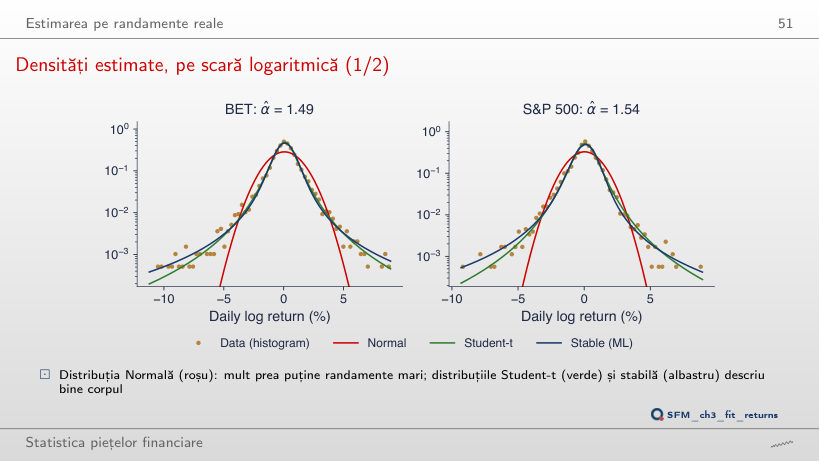
Răspuns
De circa 120 000 de ori: 4,4 × 10−9 față de 5,5 × 10−4. Densitatea stabilă este 1,0 × 10−3, aproape de două ori densitatea Student-t. Coada Normală scade ca e−x²/2, iar cozile celorlalte două ca o putere a lui x, deci raportul crește foarte repede cu |x|.
Densități estimate, pe scară logaritmică
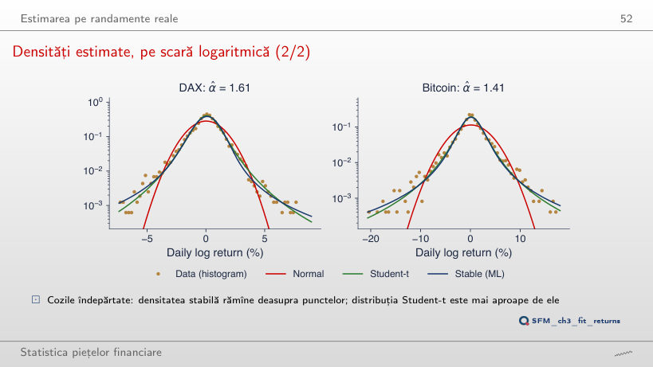
Răspuns
De circa 2,9 ori: 3,7 × 10−4 față de 1,3 × 10−4. Coada stabilă scade ca |x|−α̂−1 cu α̂ = 1,61, coada Student-t ca |x|−ν̂−1 cu ν̂ = 3,09; un exponent mai mic înseamnă o coadă mai groasă. Raportul este 1,6 la −5 abateri standard și 3,9 la −10.
QQ plots față de cele trei modele
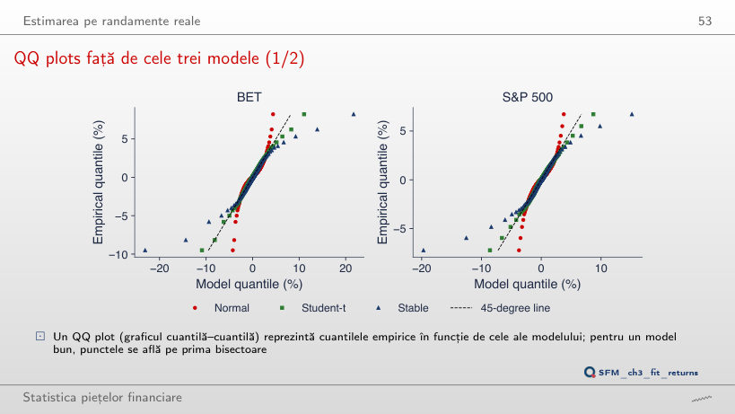
Răspuns
19,70%, de 2,7 ori cuantila empirică. Student-t dă 8,58%, distribuția Normală 3,72%. La p = 1%, valorile sînt 3,45% (date), 4,54% (stabilă), 3,46% (Student-t) și 2,80% (Normală): legea stabilă exagerează deja, dar diferența crește cu cît p este mai mic.
QQ plots față de cele trei modele
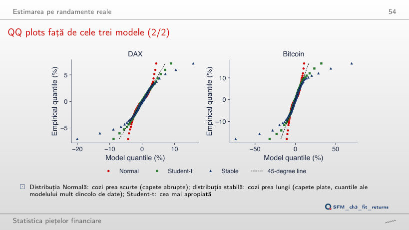
Răspuns
Student-t: 11,06%. Legea stabilă dă 14,26%, distribuția Normală 7,99%. La p = 0,1%, datele dau 18,05%, Student-t 31,95% și legea stabilă 74,16%: și Student-t exagerează coada îndepărtată a Bitcoin, dar mult mai puțin decît legea stabilă.
Coada stîngă pe axe log-log
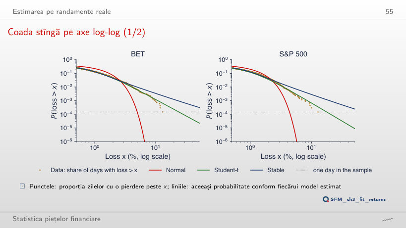
Răspuns
57,3, de 2,5 ori mai multe. Student-t așteaptă 27,0, distribuția Normală 0,1. Pentru pierderi peste 10%: o zi observată, 4,5 conform Student-t și 19,1 conform legii stabile. Raportul dintre zilele așteptate de legea stabilă și cele observate crește odată cu pragul.
Coada stîngă pe axe log-log
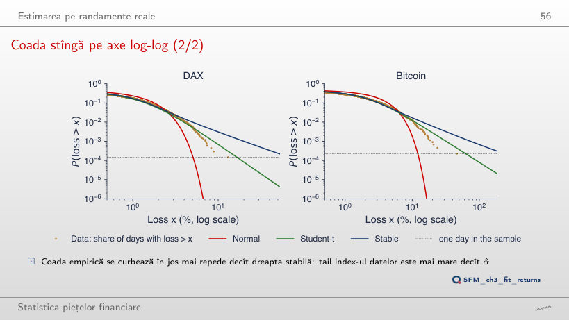
Răspuns
12,3 conform Student-t și 26,9 conform legii stabile; distribuția Normală dă practic zero. Ambele modele cu cozi groase exagerează coada îndepărtată a Bitcoin, legea stabilă de peste 6 ori. Pentru pierderi peste 10%: 56 observate, 54,2 (Student-t), 73,9 (stabilă).
Numărarea pierderilor mari
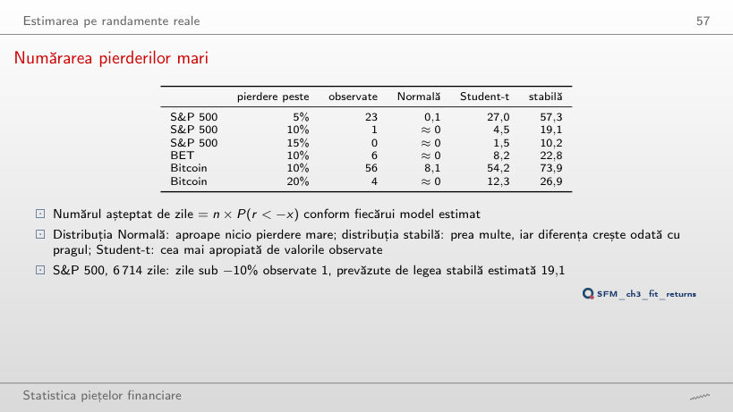
Zile cu pierderi peste x%: observate și așteptate (n × P(r < −x)) conform fiecărui model estimat
Exemplu lucrat: coada de tip putere a legii stabile estimate
Răspuns
18,3 zile, 96% din valoarea exactă: c1,540 = 0,1868, P ≈ 0,1868 × 1,181 × 17,33−1,540 = 0,00273. Factorul 1 − β̂ = 1,181 vine din β̂ = −0,181: coada stîngă a legii estimate este mai groasă decît cea dreaptă. Observate: o singură zi. Pentru Bitcoin la 10%, aproximarea dă 68,2 zile, față de 73,9 exact și 56 observate.
VaR 1% și VaR 0,1% conform celor trei modele
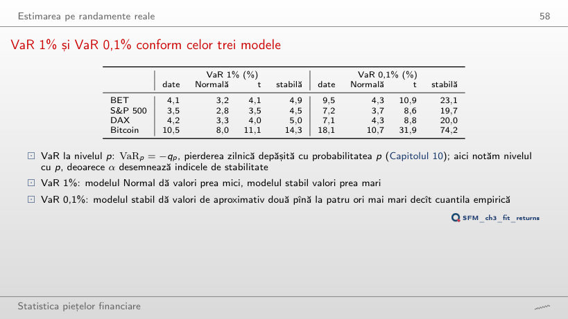
VaRp = −qp din date și din cele trei modele estimate (% pe zi)
Exemplu lucrat: VaR din legea stabilă estimată și din distribuția Normală
Răspuns
Circa 7,9: 31,21% față de 3,97%. Raportul crește pe măsură ce p scade, deoarece cuantila legii stabile crește ca p−1/α, iar cea Normală doar ca √(2 ln(1/p)). Cuantila empirică la 0,05% este 9,31%, deci legea stabilă depășește datele de 3,4 ori. La 5% raportul stabil/Normal este 0,91: în corpul distribuției, legea stabilă dă un VaR mai mic.
Compararea celor trei modele
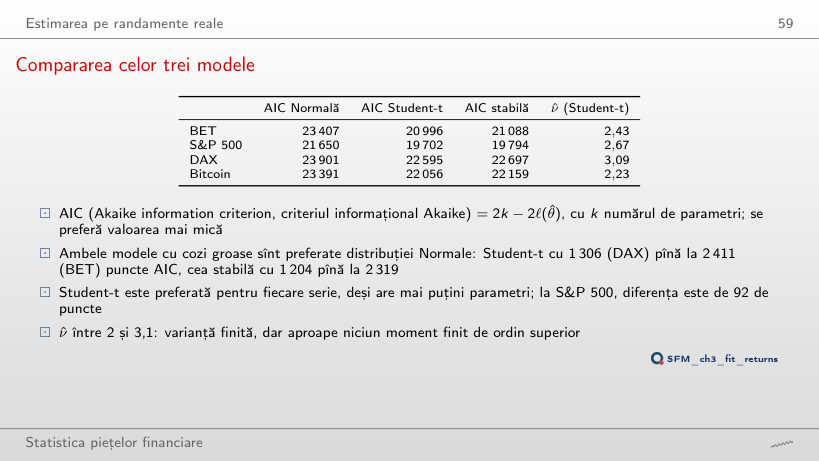
Criterii informaționale ale celor trei modele estimate
Răspuns
98,4 puncte. Legea stabilă are un parametru în plus (4 față de 3), iar BIC îl penalizează cu ln 6 714 = 8,81 în loc de 2: 91,6 + 6,8 = 98,4. Concluzia nu se schimbă. Față de distribuția Normală, diferențele AIC ale distribuției Student-t sînt între 1 306 (DAX) și 2 411 (BET) puncte, cele ale legii stabile între 1 204 și 2 319: „mii de puncte” este exact doar pentru BET.
Critica: varianță finită sau infinită?
Testul 1: rămîne α la fel cînd randamentele se adună?
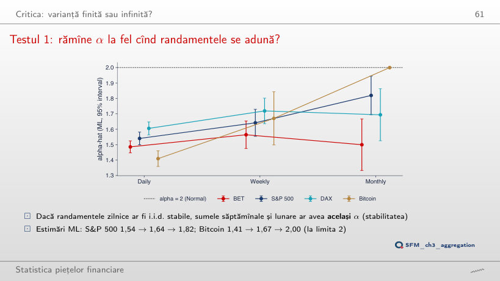
Răspuns
Nu. La 99% (±2,576 erori standard), intervalul zilnic este [1,486; 1,594], iar cel lunar [1,655; 1,984]. Nici la 99,9% (±3,29 erori standard) nu se suprapun, deși distanța dintre ele ajunge aproape la zero. Pentru DAX și BET intervalele se suprapun deja la 95%. Intervalele sînt asimptotice, iar cel lunar se bazează pe 321 de luni.
Testul 2: se stabilizează varianța de selecție?
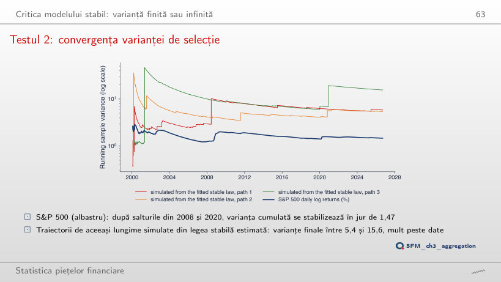
Răspuns
Mult mai sus: 252,1, 111,4 și 52,6, de 4 pînă la 21 de ori varianța datelor. La fel pentru S&P 500 (slide-ul): datele 1,47, traiectoriile 5,9, 5,4 și 15,6. O lege stabilă cu α̂ < 2 produce extreme pe care seriile reale nu le au, iar varianța lor de selecție nu se stabilizează.
Randamente logaritmice zilnice, în %: BET, S&P 500 și DAX din ianuarie 2000, Bitcoin din septembrie 2014 (7 zile pe săptămînă), pînă la 18 septembrie 2026. Prețuri de închidere EODHD. Legile estimate sînt cele din curs: distribuția Normală, Student-t și legea stabilă estimată prin verosimilitate maximă în parametrizarea S0.